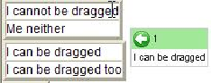

We will demonstrate a simple DnD use. This example will define a DnDSource, a DnDTarget and add some behaviours to those.
First, we define a drag and drop source. There are two DNDSource types in tatami:
But you do not have to construct these objects yourself, since the DnD helper do all this for you.
We begin by defining a standard GWT panel, and adding widgets to it :
Then, we register this panel as a source panel, and the widgets it contains as dnd element within these source.
We are now able to move widget1 and widget2 across the screen, but nobody is there to accept them.
Similarly,we will define a DnD Target.
Now we must define a behavior to be applied to those drag and drop events.
There are some Behavior classes defined. See the behavior section for a complete description of each.
Here, we will use the WidgetDnDBehavior, which is the best suited to manage dragging a widget from one panel to another.
We will override the onDrop method only, to move the dropped widget from the source to the target.
Then, we register this behavior for our specifics sources and target:
Registering a behavior for a source/target couple may raise an exception if a behavior is already defined for these couple.
Now, we are able to drag a widget from the source panel to the target:

You may also drag both draggable items by clicking them s